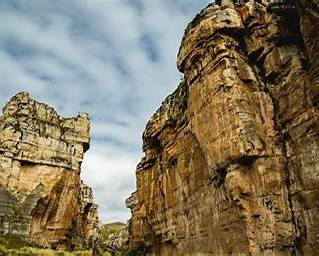
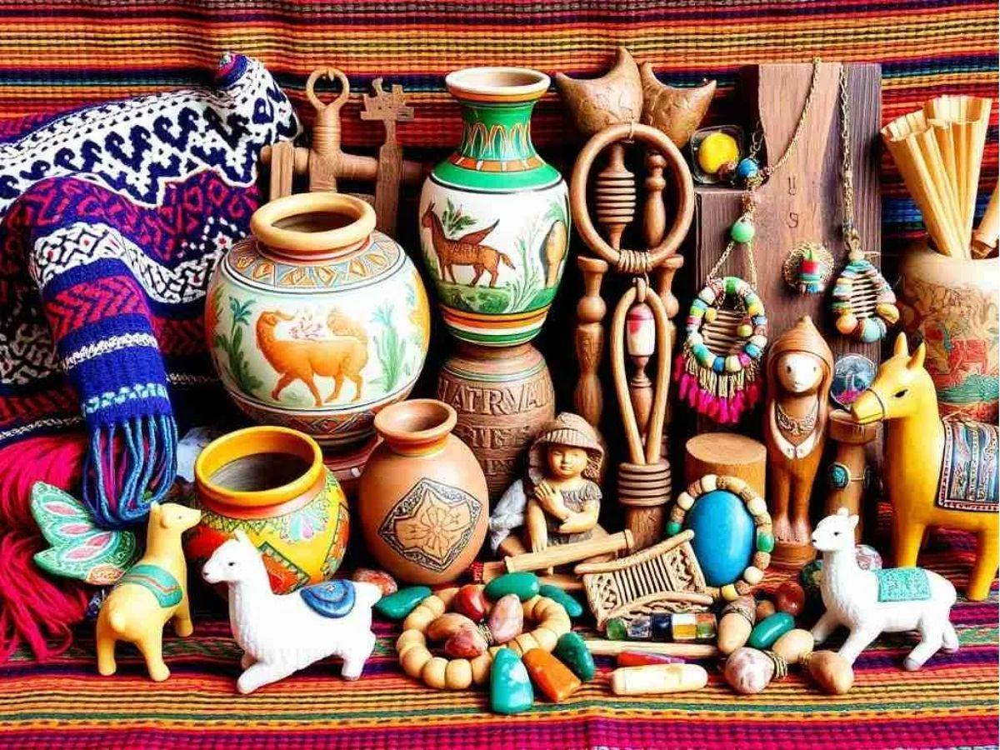
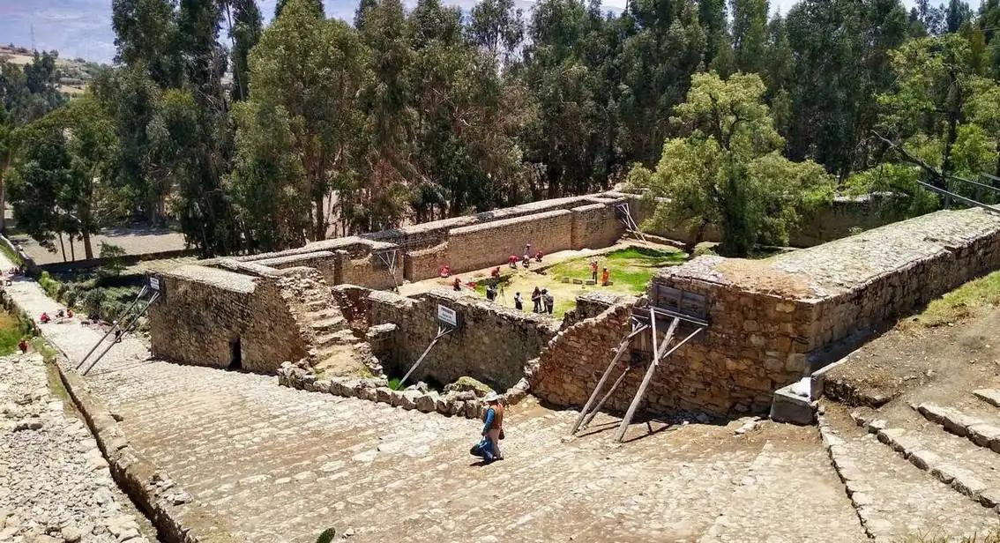
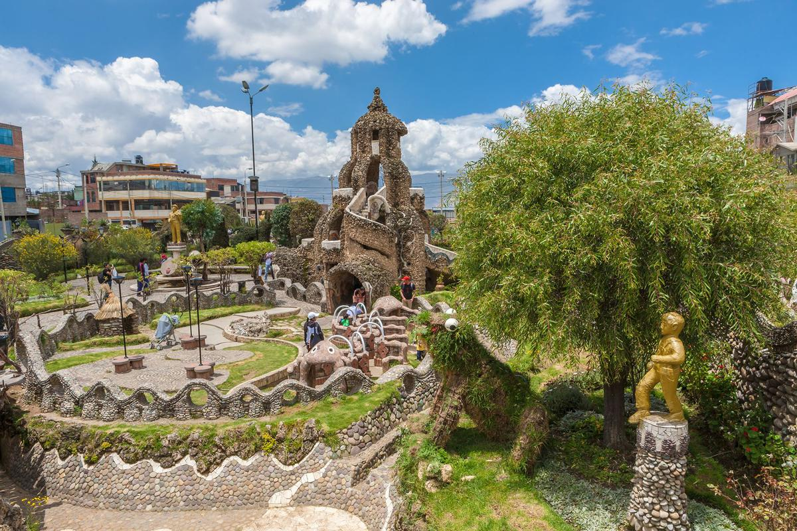
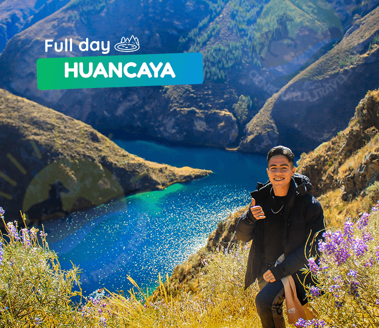

Inicio: 8:30 am. Salida desde Huancayo. Puente Colgante. Baños Termales de Llocllapampa. Hacienda Pachacayo: Sais Túpac Amaru. Sitio Arqueológico de Corivinchos. Cañón de Shutjo: Trekking de 01 hora de ida y vuelta. Puyas de Raimondi. Retorno a Huancayo. Fin: 7:00 pm.

Inicio: 10:30 am. Salida desde Huancayo. Hualhuas: Taller Artesanal y Textil. San Jerónimo de Tunan: Taller Artesanal del Oro y la Plata. Mirador de Piedra Parada: Estatua de la Virgen Inmaculada Concepción. Helados Artesanales de Concepción. Ingenio: Lugar para almorzar. Convento de Santa Rosa de Ocopa: La visita al museo es de 9:00 a.m. a 11:15 a.m. y de 3:00 p.m. a 5:15 p.m., todos los días excepto los martes. Retorno a Huancayo. Fin: 7:00 pm< Transporte Turístico: Servicio Compartido. Guía de Turismo: En español (Para otros idiomas, consultar) Tickets de Ingreso:Estatua de la Virgen Inmaculada Concepción S/.5.00, Centro Piscícola El Ingenio S/.3.00, Museo del Convento de Santa Rosa de Ocopa S/.10.00 Alimentación. Bebidas y snacks. Regalos, souvenirs, compras personales. Propinas por servicio (Opcionales, voluntarias).

Inicio: 10:30 am. Salida desde Huancayo. Mirador Huama Huata: Estatua del Cristo Blanco y Puente de Cristal. Plaza de Armas de Chongos Bajo. Cani Cruz. Sitio Arqueológico de Arwaturo: Trekking de 35 minutos de ida y vuelta. Mirador del Valle del Mantaro. Laguna de Ñahuimpuquio. Retorno a Huancayo. Fin: 6:30 pm.

Inicio: 10:30 am. Salida desde Huancayo. Mirador Huama Huata: Estatua del Cristo Blanco y Puente de Cristal. Plaza de Armas de Chongos Bajo. Cani Cruz. Sitio Arqueológico de Arwaturo: Trekking de 35 minutos de ida y vuelta. Mirador del Valle del Mantaro. Laguna de Ñahuimpuquio. Retorno a Huancayo. Fin: 6:30 pm.Transporte Turístico: Servicio Compartido. Guía de Turismo: En español (Para otros idiomas, consultar)./p>

Inicio: 5:00 am. Salida desde Huancayo. Cañón de Uchco. Plaza de Huancaya. Mirador Cabracancha. Puente Colgante de Cabracancha. Puente Colonial. Mirador de Carhuayno ó Mirador de la Laguna Huallhua: Opcional. Trekking de 25 minutos de bajada hasta la Laguna Huallhua. Laguna Huallhua: Paseo en Bote a las Cataratas de Huallhua. Trekking de 45 minutos de subida hasta la movilidad. Retorno a Huancayo. Fin: 9:00 pm.